摘要
《最终幻想X》把牺牲秩序写进朝圣路线、寺院机关、战斗次序、成长网络、召唤动画、《祈祷之歌》（祈りの歌／Hymn of the Fayth）、叙事隐瞒和多语配音。玩家沿唯一的道路前进，把祈祷者（祈り子／fayth）被禁锢的身体化作战力，也逐渐接受召唤士（召喚士／summoner）以死亡换取安宁节（ナギ節／Calm）的常识。到了结局，同一双手又被迫反转早已熟练的操作：逐一送别召唤兽（召喚獣／aeon），终止“辛”（シン／Sin）的再生。本文以“行路—回返—放下—转译”为四幕，以和为主轴。、与用来说明秩序如何进入身体、知识和欲望；东亚丧葬史、文学、冲绳／琉球空间、与，则用来检验这种解释的历史限度。本文把耶朋（エボン／Yevon）称为“”：它垄断灾难的解释、合法回应与牺牲分配。梦中的札纳尔坎德（夢のザナルカンド／dream Zanarkand），则是一种以灾前记忆为边界、拒绝停止召唤的封闭纪念生态。《祈祷之歌》从战时反抗，经由教团收编与族群哀歌，最后成为全史匹拉（スピラ／Spira）的共同声音。旧传统没有被净化，却成了终止循环的条件。游戏由此发明一种可操作的：记忆仍在，死者却不再支配生者的未来。1
关键词：《最终幻想X》；整体游戏评论；；；灾难记忆；；游戏音乐；
译名说明：本文对《FINAL FANTASY X/X-2 HD Remaster》官方繁体中文资料中能够直接核实的专名采用官方形式并转换为简体字形；尚缺游戏内字幕图证的语句明确标为本文转译，不以流传译文冒充官方文本。游戏专名首次出现时按“中文（日文／英文）”标注，章节再保留完整比较。19
序曲：水面上的舞者，屏幕前的见证人
基利卡（キーリカ／Kilika）被“辛”摧毁之后，优娜（ユウナ／Yuna）走上水面。杖划出圆弧。衣袖随海风转动。亡者的幻光虫（幻光虫／pyreflies）从水下升起。岸上的人低头哭泣；玩家不能替他们收殓，也不能改变仪式，只能看着这个世界第一次完整展示自己的死亡秩序。游戏没有先解释神学。镜头的远近、浪声、音乐和迟缓的动作把我们留在岸边，让死亡显现为一件公共事件。2
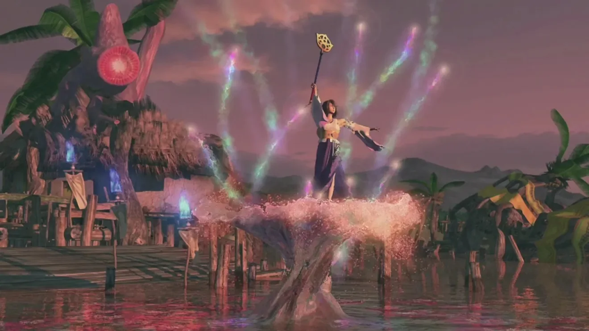
要理解《最终幻想X》，必须先从身体开始。游戏世界不是一张等待解码的象征表；它首先是方向、速度和阻力。玩家握住手柄，沿窄路走向寺院，在随机遇敌中反复停步，在存档水晶前喘息，又在漫长的召唤动画中等待巨大身体降临。布伦丹·基奥对游戏身体的现象学分析，可以概括为“”：玩家并非站在世界之外观看神话，而是借输入、反馈、节奏和视听，让自己的身体暂时接上另一个身体。本文把这一机制进一步称为“身体—游戏耦合”。提达（ティーダ／Tidus）是这个接口，却不是透明容器。他的无知、急躁和运动员姿态，规定了玩家最先看见什么，也规定了什么暂时看不见。
把异界送理解成“日本佛教丧礼的游戏版本”，会抹去作品的混杂性。日本佛教的丧葬与追善实践，一直随寺檀制度、近代国家、城市化和家庭结构而重组；诵经、烧香、年忌供养与祖先祭祀既处理死后命运，也组织生者的关系。史匹拉借用水上送魂、供养、怨灵和彼岸想象，又把它们同天主教式层级、南岛舞蹈、幻想宗教与数字特效缝合。优娜不是“真实佛教”的巫女，耶朋也不是某一宗派的密码。真正相近的是结构：无人安置的死者会滞留、变形，继而伤害生者；仪式让记忆延续，也让占据停止。
《最终幻想X》随即把宗教问题推向政治。异界送安置灾难中的普通死者，掌权的未发送者却拒绝退场。米卡（マイカ／Mika）以职位延续行政，优娜蕾丝卡（ユウナレスカ／Yunalesca）以传统复制牺牲。希摩尔（シーモア／Seymour）则把耶朋的死亡逻辑推到极端，企图用所有人的死亡取消所有痛苦。三者并非同一种幽灵，却共同提出全作最早的问题：谁有资格决定死者何时离开？当死者仍握着职位、教义或军队，送行便不只是宗教仪式，也是解除主权的政治行动。3
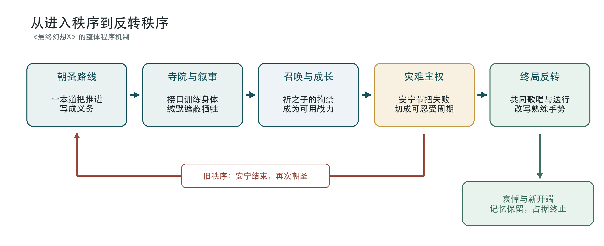
第一幕 行路：身体先于教义
一、朝圣不是背景，而是一台叙事机器
《最终幻想X》的故事以废墟旁的营火开场。提达让同伴与玩家“听他的故事”，随后绝大部分游戏成为一段漫长倒叙。我们从一开始就知道队伍将抵达札纳尔坎德，却不知道抵达意味着谁的死亡。这个框架把终点提前投射到每一步之上：海岛、港口、寺院、雪山尚未成为过去时，便已被终局的火光染上追忆色彩。倒叙抵达札纳尔坎德郊外的同一堆营火后，提达的旁白停止，故事追上讲述它的现在；从此人物不再复述已经发生之事，而要进入尚无叙述担保的行动。4
在这里首先要问：“谁知道？”提达是外来者，叙事也主要经由他形成。史匹拉居民知道召唤士会在究极召唤中死去，玩家却和提达一样，被排除在这项常识之外。优娜的微笑、露露（ルールー／Lulu）的沉默、瓦卡（ワッカ／Wakka）对旅程的热情，初次游玩时都显得自然；真相揭开后，同样的动作才露出第二层含义。作品并非只藏起一条信息。它借不对称的知识，让玩家亲自经历共同体的缄默：牺牲制度最稳固的时候，不是人人受骗，而是人人知情，却把这份知情安排成沉默。
朝圣路线把这种缄默变成空间。旧式世界地图在本作中收缩为一条大体线性的道路：岛屿—寺院—城市—平原—雪山—废都。线性常被视为自由度不足，在这里却成了叙事形式。每座寺院都许诺新的力量，每一次召唤也让优娜更接近死亡。玩家为了成长而前进，恰好重演耶朋为召唤士规定的进度表。所谓“一本道”不只是制作限制，也是一种制度经验：你可以选择战术，却暂时不能选择旅程的终点。
寺院试炼又把一本道压缩成一套操作语法。玩家必须触摸纹章，取出、携带并嵌入幻光球，按规定顺序开门、移动基座。身体完成正确输入，空间才会开放。反讽由此显现：耶朋在教义上谴责机械，圣殿内部却像一台巨大机器，以插槽、回路、移动墙和能量接口运行。宗教在这里掌握的是接口的分类权：哪些操作神圣，哪些知识有罪，又是谁可以触碰它们。5
试炼还把朝圣拆成两套重叠规则。主线路径要求最低限度的服从；“破坏幻光球”则开启隐藏宝箱，把神圣空间转换成完成度与奖励的优化问题。玩家一面扮演不懂教义的外来者，一面迅速学会把寺院阅读为机关表：这里有可拆卸的钥匙，那里有尚未领取的资源。程序在邀请玩家服从仪式的同时，也泄露了仪式可被分析、逆向和重新组合的机械结构。
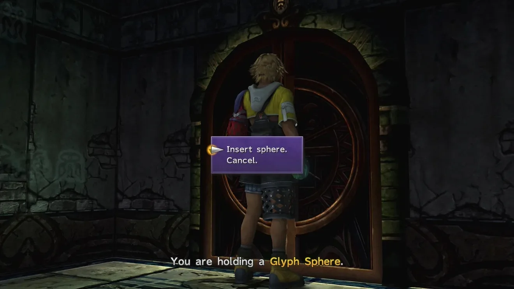
杰克特（ジェクト／Jecht）幻光球则像散落在道路上的私人档案。它们不是全知旁白，而是带有拍摄者位置、遗漏和偏见的嵌入媒介。提达必须在父亲留下的影像中重新理解父亲；玩家也必须把当下道路与十年前的朝圣叠合起来。叙事因而不是线性信息输送，而是一次回返：现在不断在旧影像中发现自己的先例。真正的问题不再是“这一代能否比上一代更强”，而是“这一代是否只能成为上一代的重拍”。
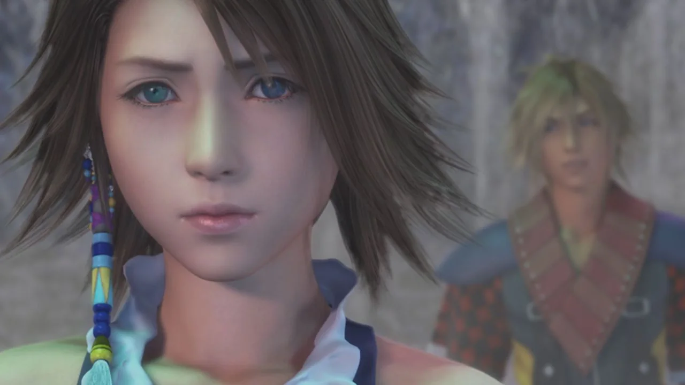
二、被迫的笑：与圣女形象
路加（ルカ／Luca）之后那场著名的强笑，常被截成配音失误的网络笑料。若把它放回场景，尴尬恰是它的内容。优娜说，难过的时候也要练习笑，因为别人依靠召唤士的表情获得希望。她与提达故意发出不自然的笑声，随后才短暂地真正笑起来。声音在这里暴露了的接缝：公共角色要求她把恐惧加工成可供他人消费的安宁。
在这里不负责诊断优娜，而追问她被要求认同怎样的理想形象。召唤士必须温柔、坚定、乐于牺牲，最好连死亡也不使别人不安。共同体把自身无法承担的恐惧寄托到她身上，再要求她以微笑证明恐惧已经被克服。她越成功地成为希望，就越难以作为一个害怕死亡的年轻人说话。
让我们听见这一点：笑声过长、呼吸不稳、身体僵硬，意义落在声音无法顺利贴合情绪的接缝上。镜头暂时收走移动、探索与战斗输入，玩家不能把笑“按得更自然”，只能忍受它持续到表演自行结束。这种低自由度形成一种观看伦理：尴尬不能被操作立即解决。
史又让这种不协调显出第二层技术含义。英语负责人亚历山大·O·史密斯回忆，语音长度必须严格贴合日语表演和引擎的触发时序；强笑在日英两种表演中，本就都应显得不自然。角色的与译者的技术劳动由此重叠：优娜把悲伤压进规定的公共表情，译者则把语句压进规定的声音时限。玩家此时还不知道她将赴死，容易先把尴尬归咎于演技。后来，游戏在阿尔贝德（アルベド／Al Bhed）“家园”让这一幕以无声回忆重现，同一画面才从喜剧变成死亡预告。6
三、南方群岛：冲绳不是装饰，也不是答案
史匹拉最初以比塞德（ビサイド／Besaid）和基利卡的海风迎接玩家。脚本家野岛一成在二十周年访谈中回忆，冲绳旅行留下的意象推动了作品的“东方”方向；提达的日文名「ティーダ」来自冲绳语的太阳，优娜之名也与当地语言和黄槿花相连。角色设计与音乐又吸收南太平洋、泰国和奄美／冲绳的色彩。《素敵だね》由唱岛歌的 RIKKI 演唱，制作团队寻找的正是能够传达南方岛屿空气的声音。7
这些线索使史匹拉不同于以欧洲中世纪为默认坐标的奇幻世界，但“南方”不能只被赞美为热带美学。琉球王国在十九世纪被日本国家吞并，冲绳又经历地面战、长期美军治理与至今不对称的基地负担。游戏没有把这段历史逐项寓言化，比塞德也不等于现实冲绳；然而，当中央教团位于贝薇尔、禁忌与正统从中心向群岛扩散，而边缘岛屿承担灾难最直接的伤亡时，东亚读者有理由感到一种中心—边缘的历史回声。21
这类阅读必须保持双重克制：不能因为开发者谈到冲绳，就宣布全作是冲绳殖民史的隐喻；也不能只把冲绳当作阳光、织物、音乐与异国感的素材库。更稳妥的说法是：史匹拉的空间想象从日本列岛南缘与亚洲海域取得感性材料，而这些材料本身带着帝国、战争、观光和边缘化的历史阴影。阳光不是无辜的布景。它照见谁被放在世界中心，也照见谁被塑造成中心想象中的“南方”。
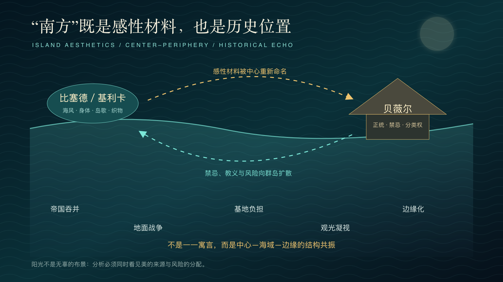
声音线索：在理解教义以前，玩家已经会听
如果水是《最终幻想X》最醒目的视觉介质，《祈祷之歌》就是它的声音线索。玩家尚未弄清耶朋·咒（エボン＝ジュ／Yu Yevon）、祈祷者与梦中的札纳尔坎德的关系，旋律已经在寺院和灾难间歇中反复出现。没有器乐伴奏的人声、相近音区里的短句回旋、呼吸之间的空隙和石室般的残响，使向前推进的旅程暂时悬停。它唤起礼仪吟诵的听觉姿态，却不是格里高利圣咏、佛教声明或琉球祭歌的直接复制，而是为史匹拉制作的混合圣声。
声音常常先于身体到达。寺院里，玩家隔着墙壁听见歌声；进入祈祷者之间后，才看见那些与具体召唤兽相连、被固定在圣像中的个别祈祷者。抵达嘎嘎泽特山后，玩家又看见祈祷者之墙：札纳尔坎德战争的幸存者在那里共同维持梦城。两类祈祷者形成于不同时间，召唤的对象也不同，不能混成同一群体。它们共享的，是歌声离开了无法自由移动的身体；被召唤出来的存在，则在战场或远海成为可操作、可居住的代理。眼睛看见圣像与山壁，耳朵却先听见仍在劳动的身体。官方原声带把这支歌列为一个版本家族。寺院独唱、隆索族低沉的集体声部、阿尼玛版本孤立的音色，以及全史匹拉的合唱，都保留同一旋律轮廓，却不断改写“谁在唱”。
歌词音节横向排列时近似无义；换一个矩阵方向阅读，才显出「祈れよ、エボン＝ジュ／夢見よ、祈り子」等命令句。原句省去助词，两个并列祈使句都留下了呼告关系的空白，因此不能把耶朋·咒简单固定为“接受祈祷的对象”。歌曲把祈祷、做梦与无尽延续压进同一命令结构。主客关系没有封死：教团可以把它解释为服从，歌声也保留了反过来命令神本身的可能。这里讨论的是句法开放性产生的政治阅读，不是对歌词“唯一正解”的设定解谜。8
蒂姆·萨默斯提醒我们，游戏音乐必须作为供游玩与互动的音乐来理解。玩家没有独立的“歌唱键”，却在数十小时的返回中学会辨认旋律、声源与场景重量；到终局，熟悉感变成战术知识。反复聆听是一套漫长的听觉教程：游戏先教耳朵记忆，随后才揭示谁曾占有这段记忆，以及它怎样进入行动。
第二幕 回返：灾难把世界变成制度
走到这里，秩序已经被身体、耳朵和情感学会。第二幕要把这些动作重新接成制度。朝圣的道路、寺院的接口、召唤的战力和安宁节的希望并不孤立；它们共同把无法终结的灾难，加工成可以一代代执行的日常。
四、与：谁执行命令，谁承担后果
耶朋教团的统治不能缩减为“宗教撒谎”。“辛”真的杀人，召唤士也真的减轻灾难；安宁节确实让村庄获得重建的时间。教义正因为附着在有限而真实的功效上，才比纯粹的骗局更耐久。本文把这种权力称为“”：它不必创造灾难，只须垄断对灾难起因的解释，规定谁可以应对，又规定何种牺牲才算高贵。
其封闭逻辑近乎完美。“辛”仍在，证明人类罪业未净；究极召唤暂时胜利，证明教义有效；“辛”再次回来，则证明赎罪尚未完成。任何结果都能成为教团的证据。施米特以决定例外者界定主权；史匹拉更阴暗之处在于，例外已持续一千年，寺院把紧急状态做成日常规范。机械禁令、召唤士资格、朝圣路线、异端裁决和安宁节纪年，共同决定社会怎样想象可能性。
耶朋公开谴责机械，权力中心却秘密使用机械武器。这不只说明精英虚伪，更说明禁忌的真正功能是保留分类权：中心可以决定什么是污秽，何时可以例外，失败又该由谁背负。宗教权力并不反对技术本身；它支配的是技术何时能够被称为“正当”。
《祈祷之歌》的命运表明，这种分类权也作用于声音和历史。按梅辰的讲述，它最初是机械战争时期札纳尔坎德反抗贝薇尔的歌。耶朋教团形成后禁止它流传，异议者与阿尔贝德却继续传唱。压制失败，教团便撤销禁令，改写歌曲的来历，把它宣布为安抚死者的圣典。战时记忆由此被后来的宗教机构重新占有。意识形态最稳固的胜利，未必让人沉默；它也可以让人继续唱，却忘记这段旋律曾经反对什么。阿尔贝德、隆索、祈祷者与普通居民又在各自处境中改变演唱关系，使被收编的形式始终不能完全等同于教团赋予它的意义。9
克里斯托弗·斯莫尔用“”把注意力从乐曲本身移向演唱关系：谁在何处，与谁一起，又为谁发声。按照这一视角，寺院圣歌、阿尔贝德的丧歌、隆索族的合唱与终局的全民歌声虽然共享旋律，却不是同一种政治行为。意义不只来自歌词，也来自发声者之间暂时建立的关系。教团能够改写歌曲的历史，却无法冻结此后一切演唱的意义。
然而，只说“主权者决定”，仍不能解释耶朋为何延续如此之久。耶朋·咒早已失去说明理由、承认后果的人格。米卡把维持秩序说成死者的职责，优娜蕾丝卡把牺牲说成世界自古如此的法则，寺院官僚则以服从教义为自己辩护。命令从一个职位传到另一个职位。每个人都有权推动牺牲，却没有人肯说：“这是我的决定。”
丸山真男分析战时日本政治时提出的“”，恰能揭示这种结构。它不是无人管理，而是权力与责任的奇异分离：决定以天皇、国体、传统、上级或既成事实的名义作出，参与者却把自己描述成形势的被动执行者。史匹拉的恐怖也不需要一个全知全能的阴谋家。只要每一级机构都把选择伪装成必然，把判断交给更古老、更神圣或已经死去的权威，牺牲就会继续，责任却始终无处落名。
责任并未真的消失。隐瞒究极召唤的真相、裁决异端、维护禁忌、继续招募年轻召唤士，都是具体行动。制度性责任被分散，却不能成为个人免责的借口。游戏由此把目光从“幕后是否有唯一恶人”移向一条更难切断的执行链：每个人只做一点点，死亡机器便获得了仿佛无人驱动的生命。
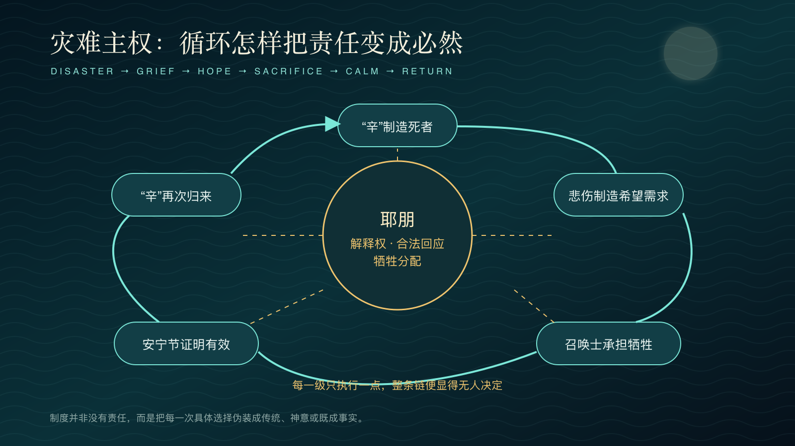
队伍内部让这种责任从抽象制度回到人的改变。瓦卡以耶朋教义解释弟弟之死，也用“机械禁忌”维持对阿尔贝德的偏见；家园与贝薇尔的见闻迫使他承认，自己曾把哀痛借给教团说话。莉库（リュック／Rikku）与阿尔贝德拒绝召唤士献祭，却以绑架召唤士来“救”她们，仍可能替当事人决定命运。优娜则既非纯粹受害者，也非天生的反抗者：她曾借婚姻、朝圣和父亲的声望在制度内部寻找出路，直到优娜蕾丝卡面前才把没有胜利保证的拒绝说出口。信仰的终止因此不是一次揭密，而是关系、羞耻、争执与承担缓慢改变行动的过程。10
奥隆（アーロン／Auron）所说的“”因此不是自然轮回。它是一条由制度连接的生产线：
“辛”制造死者 → 死者制造悲伤 → 悲伤制造希望需求 → 教团垄断希望 → 希望要求召唤士牺牲 → 安宁节证明制度有效 → “辛”重生。
究极召唤并非单纯失败的救世技术。它在政治上成功地把不可终结的灾难切成可忍受的周期，也把每一代人的爱转化为下一代必须重复的义务。牺牲者被纪念为楷模，楷模又成为招募新牺牲者的图像。制度的燃料并不是仇恨，而是最值得尊敬的情感：责任、忠诚、怜悯和不愿让别人受苦。
五、时间的两张脸：CTB、本雅明与历史中断
战斗系统把时间变成一列可见的行动顺序。玩家能看见谁先行动，能用速度、延迟和替换成员改写后续行动次序；未来在战术层面是可计算、可干预的。与此同时，史匹拉的历史却被耶朋叙述成不可更改的循环：召唤士来，召唤士死，“辛”离去，“辛”归来。
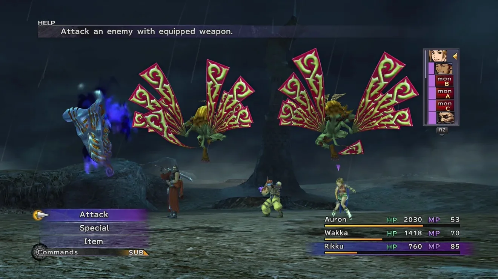
CTB 的界面美学首先是一种“可见未来”。战场仍有雨、暗云、怪物翅膀与角色姿态，右侧纵列却把这些运动压缩成头像和顺序；选择菜单出现时，世界允许玩家停下来思考。与不断倒计时的即时紧迫不同，这里拥有一种审议性的暂停：时间没有停止存在，却暂时不再从玩家手中逃走。加速、减速与延迟攻击不是数值修饰，而是直接移动纵列中的位置；策略因此表现为对未来先后关系的编辑。
随时换人而不消耗当前行动，又把队伍写成一套可以重组的关系。面对飞行敌人，玩家换上瓦卡；面对硬壳敌人，换上奥隆；遇到元素弱点，则让露露出场。差异只有在彼此补位时才显出价值。这套包容也有功利边界：角色通常必须真正参与行动，才能获得成长收益，于是玩家常让每个人轮流上场“登记劳动”。战斗让全队参与旅程，也把人格压缩成敌人类型与职业功能的匹配。幻光盘（スフィア盤／Sphere Grid）后来允许越界，才逐渐松动界面预先写好的身体分工。11
这两种时间互相摩擦。游戏教会玩家在微观层面相信后果可以被重新排序，却让人物在宏观层面相信命运没有分支。由此不只是结局才出现；每一场战斗都在训练一种反教义的时间感：行动次序并非天命，预测不是服从，规则可以被理解并用来改变结果。
本雅明对历史主义与进步神话的批判，使这层摩擦显出更深的政治含义。耶朋的安宁节不是一个真正的新纪元，而是一种均质、空洞而可计数的时间：第几位召唤士、第几次短暂和平、第几年后“辛”再临。历法继续向前，历史却没有发生；每一代人都被安置在同一条因果链中，仿佛“事情一向如此”本身就是合法性的来源。所谓传统，并非过去安静地传给现在，而是胜利者不断把现在塞回同一叙事。
从本雅明的角度看，灾难不是进步列车偶然脱轨，而可能正是列车沿既定轨道行驶时在身后堆积的残骸。“辛”每一次被暂时击败，都会让制度把尸体登记为通往下一次安宁的必要代价。真实札纳尔坎德的废墟因此不是落后于重建的残余；它像一道停顿，使被周期性胜利遮蔽的代价突然可见，也使过去不再只是证明现在正确的谱系，而成为对现在提出要求的未竟之事。
这正解释了终局为何不是制造一个更强的究极召唤。真正的胜利不在于把循环完成得更完美，而在于停止以完成为名继续循环。CTB 在微观战斗中训练玩家延迟、插入、替换和改写行动顺序；最后，这种战术能力被提升为历史能力：不是等待命定回合到来，而是在回合表上划出一处旧规则无法预先占据的中断。
但幻光盘又提供另一种警告。成长被绘成布满节点的巨大网络，看似开放，角色初期仍被安排在职业化路径上。玩家通过钥匙与资源越界，才可能让战士学习治疗，让盗贼承担重击。自由并不是没有结构，而是看见结构、支付越界成本并重新布线。史匹拉的革命同样如此：它不是喊出“相信无限可能”便自动发生，而要辨认祈祷者、召唤、飞空艇、祈祷之歌和“辛”之间的实际连接。
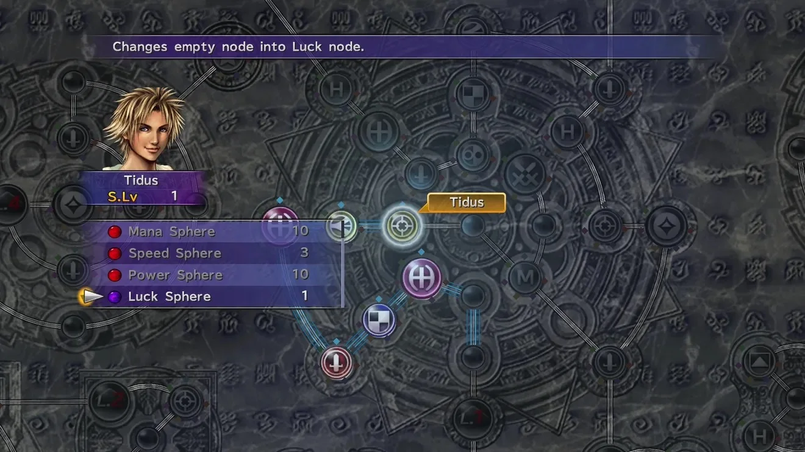
六、症状、父亲与
弗洛伊德所谓“”，并不是主体喜欢同一种痛苦，而是尚未被理解和的经验，以行动的形式返回。借此阅读史匹拉，“辛”不必被翻译成某种临床症状；更准确地说，整个制度都围绕一个不能成为过去的创伤组织起来。札纳尔坎德战败，耶朋·咒拒绝停止召唤，让幸存者成为祈祷者，以维持一座继续运行的记忆城市。保护记忆的装置，最终成了袭击世界的铠甲。创伤没有被记住。它被执行。20
梦中的札纳尔坎德也不是简单的谎言。拉康式提醒我们，幻想并非罩在现实之上的假画布，而是组织欲望与现实感的框架。对祈祷者而言，梦城让已经灭亡的城市继续生成；对耶朋秩序而言，究极召唤让没有终局的历史仍显得可以活下去。问题不在幻想是否“虚假”，而在这套框架要求谁继续劳动，谁继续死亡，又是否允许任何人退出。20
提达与杰克特的父子冲突，把共同体创伤缩进家庭，又重新放大。父亲曾用嘲弄塑造儿子的羞耻，后来成为布拉斯卡的究极召唤，再成为“辛”的核心。儿子若要击败席卷世界的灾难，也必须击败被灾难占据的父亲。把这一切概括成俄狄浦斯情结，会错过游戏真正的伦理难题：提达不是通过杀父取得父亲的位置，而是在战斗中承认父亲的脆弱、失败和爱，并拒绝让自己的胜利再生产一个像父亲那样的牺牲者。
这里应区分“行动化（acting out）”与“（working-through，亦译‘工作通过’）”。历代召唤士以究极召唤重演创伤，换来短暂平静；最后一代则必须看清重复如何运作，并承受不再重复以后没有保证的处境。队伍击败优娜蕾丝卡时，没有获得一套新教义，只是失去了旧教义的保险。真正的自由，不是知道自己必胜，而是在没有保证时仍然行动。
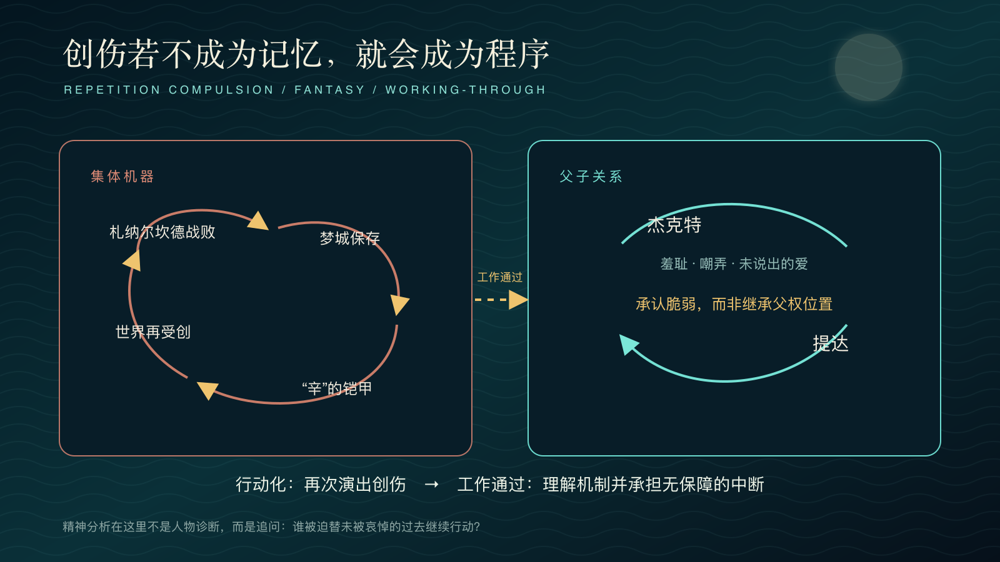
第三幕 放下：从未发送者到“空”的政治风险
一旦循环被看见，问题便不再只是揭露谁在撒谎，而是如何处理仍然真实的爱、记忆与死者。第三幕因此从制度批判转向继承伦理：终止旧秩序不能假装过去从未发生，也不能让“不可忘记”继续充当牺牲下一代的命令。
七、：中世文学与不能退场的死者
日本中世文学反复让繁华与毁灭相邻。《平家物语》以钟声和花色写盛者必衰；《方丈记》把火灾、旋风、迁都、饥荒与地震写进居所的不可靠；梦幻能则常让旅人遇见一个陌生人，后来才发现，对方是执着于旧事的亡灵。鬼魂一次次重述战斗、爱情或罪业。直到旧事被人听见，它才可能得到回向与解脱。
《最终幻想X》与这些传统具有结构亲缘，却不能被宣布为直接改编。奥隆像梦幻能中的引路幽灵：他返回旧地，重复十年前未完成的故事，任务完成后接受送行。优娜蕾丝卡则是相反的幽灵：她不求被听见后离开，而要每一代来者重新签署旧契约。米卡也不是悲剧性的亡魂，而是把死亡当成统治资格。史匹拉因此区分两类记忆：一种死者留下证言，使过去进入公共判断；另一种死者留下命令，使过去取消未来。
德里达的“幽灵”概念在这里有一个精确而有限的位置。幽灵既不是完整在场的实体，也不是与现在无关的虚无；它是继承、欠债与未完成的要求进入现在的方式。奥隆返回，使布拉斯卡与杰克特未兑现的承诺终于被听见，活人也因此能够判断并改变这份遗产。米卡与优娜蕾丝卡却把继承封闭为服从，仿佛尊重死者，只能意味着继续执行死者的命令。两者都来自过去，却构成相反的幽灵政治。
所以异界送并不消灭幽灵性。奥隆离去之后，他的证言仍改变队伍；提达消失之后，他留下的关系也没有被取消。送行所改变的是死者与生者之间的权利关系：从占据身体、职位和未来的主权，转为不能被完全偿还、却可以公开解释的记忆债务。并非把过去封存为无效档案，而是拒绝让“不可忘记”自动等于“不可修改”。
这一区分也防止我们浪漫化“”。可以使人承认盛衰与离散，也可以被权力转译为“既然一切会灭，就应安静接受牺牲”。日本近现代史中，宗教与审美语言曾被国家动员，为战死、忠诚和自我舍弃赋予超越意义。于是，批评耶朋不能只说它违背了真正的；更要问，谁在解释，谁从他人的中获益。22
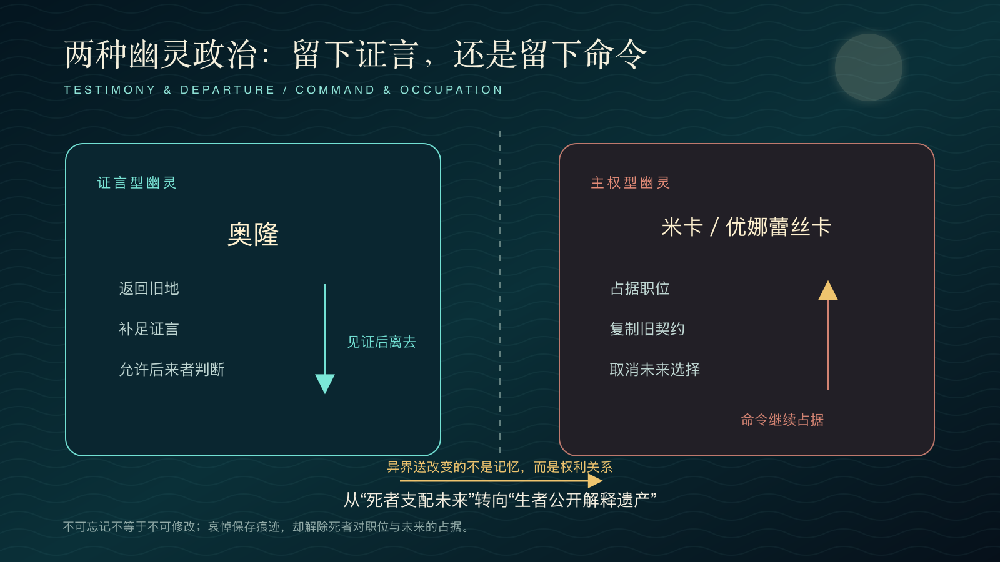
八、梦城、废墟与：原爆文学拒绝完美复原
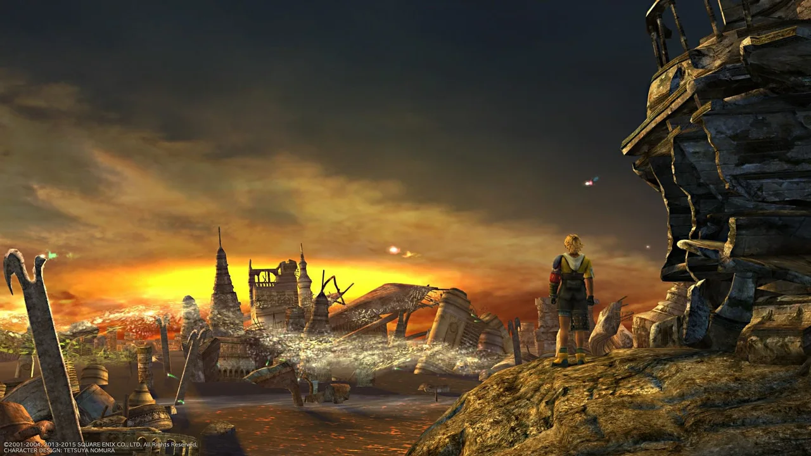
将“辛”等同原子弹、将札纳尔坎德等同广岛，是一种过于整齐的解码。《最终幻想X》的灾难同时来自机械战争、召唤、巨兽、宗教制度与家庭创伤；原爆则有不可替换的加害关系、帝国战争、殖民动员与幸存者历史。两者能够相遇，不因为怪物是炸弹的化身，而因为它们共同提出：城市毁灭之后，受难由谁代表？废墟应该保留还是复原？受害身份能否自动授予道德无辜？
原民喜的《夏之花》、井伏鳟二的《黑雨》与大江健三郎的《广岛札记》以不同文体抵抗宏大、整洁的灾难叙事。证言的断片、身体的迟发症状、日记与转述的层叠，都让灾难不能被封进一个英雄式结局。丽莎·米山（Lisa Yoneyama）的广岛记忆研究进一步指出，和平城市、纪念旅游与国家受害叙事之间存在张力。若只记住日本遭受原爆，殖民统治、侵略战争和在日朝鲜人等经验，就可能被推到纪念框架之外。12
《最终幻想X》中的两个札纳尔坎德，正好显示两种纪念技术。现实废墟保存裂缝：它承认城市曾经存在，也承认这座城市已经不能原样回来。梦城则以灾前记忆为生成边界，让建筑、居民、比赛与日常在持续召唤中延续。提达不是灾前人物的复印品，而是在这套记忆生态中出生、成长并继承家庭关系的人。梦城因此不是冻结的一帧，而是一座仍会变化、却不能停止被召唤的封闭社会。它接近斯维特兰娜·博伊姆所谓“复原型怀旧”的极端版本：无须逐项复制过去，仍把取消断裂、维持连续当作制度目标。
梦城的美学策略，不是给“过去”加一层褪色滤镜，而是把过去伪装成无需解释的现在。游戏开头让玩家命名提达、给仰慕者签名，再沿灯火通明的道路走向球场。玩家先通过教程和日常动作住进这座城市，后来才知道，它是祈祷者的召唤。这个叙事延迟至关重要：梦城若一开始就像博物馆，玩家只会把它当作遗迹观看；游戏却先让我们把它当作故乡，然后才迫使我们承认，最自然的“当下”也可能是一台仍在运转的记忆机器。
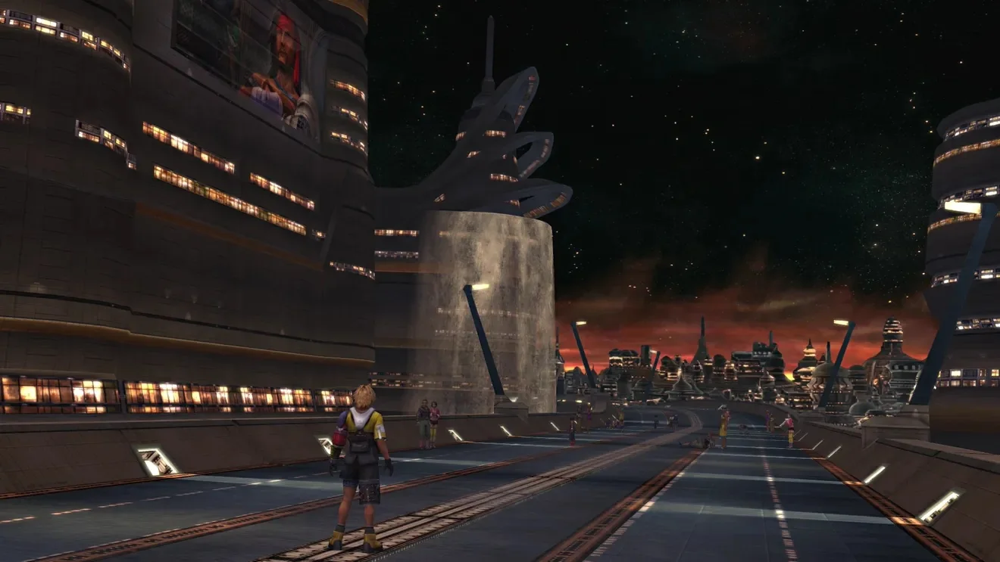
画面中的长路也有程序意味。它看似通向一座开放都市，实际上，栏杆、建筑体量和镜头方向都把玩家送往唯一的球场。繁华成了一条可以通行、却不能偏离的教程走廊。这段道路不能代表梦城的全部生活，却预演了它的边界：城里仍会举行比赛，仍会组成家庭，也仍有新一代居民；可是维持城市的召唤框架，居民既看不见，也不能修改或退出。档案的暴力，不在于每个人机械地重复同一天，而在于后来者全部的新生活，仍被用来证明过去从未中断。
它同时是一座生成性的总体档案。嘎嘎泽特山的集体祈祷者，既是札纳尔坎德战争的幸存者，也是维持梦城的活体基础设施；梦城居民不能简单等同于那批祈祷者。从提达与杰克特的代际关系来看，梦城至少不是静止保存的影像；它似乎能够在召唤内部延续生活与世代。游戏并未完整说明这种生成机制，因此本文把它视为叙事线索所支持的推断，而不是已经确认的设定。耶朋·咒不仅保存过去，也借召唤的边界规定后来者能够继承什么、看见什么。德里达在《》中把档案同记忆、遗忘、技术、宗教和支配未来的权力联系起来：档案从来不只是盛放既成事实的容器，它的组织方式也参与生成未来。梦城把这种欲望推向极端——破损被排除在城市的自我理解之外；居民可以继续生活，却不知道自己的现在依赖一场无法自行终止的保存工程。
可越是追求无中断的保存，档案越显出毁灭性。祈祷者不能醒来，提达等居民不知道自己正被召唤，外部世界则被“辛”反复摧毁，以隔绝并保护这座持续生成的记忆城市。档案不再服务于生者对过去的理解，反而要求祈祷者和外部世界成为其耗材。梦中的札纳尔坎德不是记忆胜过遗忘的乌托邦，而是保存冲动不再接受退出权与伦理限制时产生的暴力。
与梦城并行的《祈祷之歌》，是一种较少封闭、也较少暴虐的声音档案。梦城允许内部生活变化，却要求召唤框架永远运行；歌曲则只能借一次次新的呼吸继续存在。每位歌者都保留旋律，又用不同的音色、人数、场所和情境改变它。札纳尔坎德没有以实体复归，却在一支曾被敌人收编、又被后来者重新使用的歌中留下痕迹。歌曲没有提供一座可供居住的复原城市。恰因如此，继承者可以回应过去，而不必把全部生活关进过去设定的边界。
耶朋·咒最初保存城市的愿望可以理解，甚至令人同情；但创伤一旦被绝对化，整个世界便被迫围绕一座城市的伤口旋转。“我们曾被毁灭”不能成为“别人必须永远为我们的记忆受难”的许可证。广岛原爆圆顶馆之所以具有伦理力量，恰在于它没有被修复成爆炸前的完美建筑。以本雅明的语言说，废墟不是等待进步完成的半成品，而是从胜利叙事中挣脱出来的历史碎片：它让不可逆性获得公共形状，让被宏大历史压低的声音仍能向现在提出要求。
九、在东西之间：空、与日常性的检验
在本文中，只是一组必须经受历史检验的辅助概念。它本身就产生于概念的跨语言迁徙：西田几多郎在德国观念论与佛教之间寻找哲学语言，田边元以辩证法重写行动和宗教，西谷启治则穿行于尼采、海德格尔、基督教神秘主义与禅之间。把他们同德里达并置，不是让“东方回答西方”，而是观察同一种现代性危机，如何在不同语言中被重新书写。13
西田的“场所”思想，有助于摆脱“提达是真人还是假梦”的二分。提达由祈祷者的召唤、他人的记忆、身体行动和关系网络共同构成；关系中的存在，并不低于独立的实体。西谷区分吞噬意义的“虚无”与解除实体占有的“空”，则提醒我们：梦中的札纳尔坎德绝不是“空”的图像。居民会出生、成长，也会改变；维持城市的召唤框架，却拒绝让这个总体结束。祈祷者停止做梦，不是宣告提达从未存在，而是不再要求他的存在必须无止境地继续。
田边元的“忏悔道”能够照亮优娜对自身卷入的承认。她不是站在制度外嘲笑迷信；父亲的胜利、自己的愿望和民众的希望都曾与死亡机器接合。她的转向不是获得更高知识，而是在承认“我也在其中”之后改变行动。
但这种不能被直接赞美。西谷启治参与“近代的超克”讨论，并与高坂正显、高山岩男、铃木成高等人卷入“世界史立场”的战时论述；西田与田边同战争国家的关系又各有矛盾，不能用一个“支持战争”的句子抹平。无我、国家与历史使命的语言曾与帝国战争发生危险纠缠，这一事实仍要求任何“”接受政治检验。若用“”赞美年轻人的消失，评论便会复制耶朋：再次把具体生命的损失提升为宇宙真理。13
德里达在这里提供的不是另一个答案，而是一道牵制。“空”与“”都拒绝封闭、自足的永恒在场，却不能彼此等同。梦城强迫痕迹复原为完整的现在；结局则保留关系造成的改变，放弃让对象完整重现。它没有把一切归入同一个“无”，而是学习在不可复原之中继承。
户坂润曾受业于西田，后来从马克思主义立场批判京都哲学，把检验重新推回日常的物质条件。他是否应被纳入“”，本就存在定义争议；在本文中，他代表的是来自内部边缘的反向批判。谁维持寺院网络和祈祷者石像？谁把召唤士训练成公共资源？谁有权使用机械，谁又因禁令承受污名？技术不是抽象的现代性邪恶，而是被制造、占有、禁止和重新解释的社会实践。因此，及其批判者在本文只承担四个问题：关系中的存在是否解除占有？是否出于自由承担？牺牲的代价由谁支付？政治责任能否被指认？如果后两问被“东方精神”遮蔽，再优美的语言，也只是牺牲机器的润滑剂。
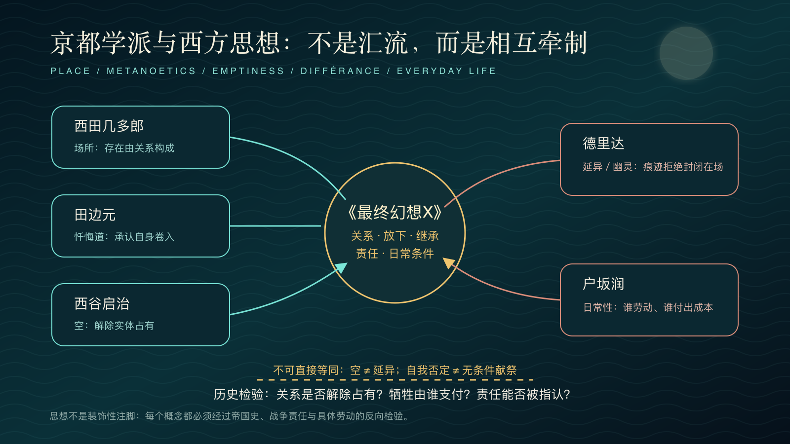
十、与送行名册：终局怎样改写“完成”
结局最激进之处，在于规则忽然改变了意义。玩家一路收集、培养召唤兽，把它们当作战斗能力、情感伙伴和完成度的证明；耶朋·咒却依次占据这些召唤兽，迫使玩家逐一击败自己的召唤名册。即使取得更强的召唤兽，也无法终结旧秩序，因为耶朋·咒的常规机制，正是占据究极召唤兽，把它变成“辛”的新铠甲。终战借占据优娜现有召唤兽的脚本流程，让这一机制第一次对玩家完全可见。14
放下与的冲突
主线的送行与游戏的经济并不完全同向。七曜武器要求玩家把水斗球、雷击回避、陆行鸟竞速、蝴蝶捕捉等活动磨练成高度重复的身体技术；怪物训练场把各地敌人变成等待补齐的采集表，幻光盘的极限培养又把成长推向数值最大化。国际版及其后继版本追加的黑暗召唤兽和审判者，更把通关后的史匹拉组织成一套需要长期积累才能征服的超强敌人谱系。叙事要求停止复演，支线系统却持续奖励重复、占有与完全掌握。15
这个矛盾不必被解释成作品失败。它说明商业角色扮演游戏无法彻底离开“更多、更强、更完整”的快感，也使终局的送行具有不同强度。只走主线的玩家主要面对五只必得召唤兽；完成隐藏寺院、洞窟与雷米亚姆圣殿的玩家，还要亲手送走保镖、阿尼玛和三位一体的美嘉斯三姐妹。完成度越高，最终出现的名册越长。游戏一面诱使玩家把世界变成可穷尽的清单，一面让这张清单在终局演出中成为损失的尺度。
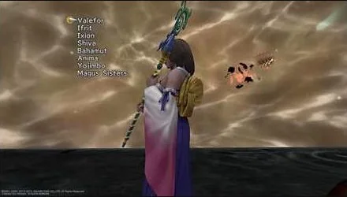
十一、共同歌声、与新开端
在此之前，全史匹拉共同唱起《祈祷之歌》，安抚“辛”内部的杰克特。歌声不再只是等待英雄行动的背景，而成为分散在各地的行动机制：普通人不能进入最终战场，却能通过共同发声改变战场的条件。合唱没有先把歌词净化成毫无歧义的新文本；它仍带着教团圣典、祈使结构和收编历史留下的杂质。终局的共同体没有找到一首纯洁的新歌，只是把权力占有过的旧形式反过来使用。圣典不再从寺院单向传给信众，而由四散的人群同时发出，变成针对神圣机器的反礼仪。
这种机制与阿伦特意义上的复数行动相通。任何一个嗓音都不足以制服“辛”，也没有界面把歌者压缩成玩家可以操纵的单位。力量来自许多彼此不同的人，暂时共享同一个节拍。若说召唤系统把祈祷者的声音集中为优娜可以调用的战力，那么全史匹拉的合唱恰好逆转了这种集中：声音从圣职者手中散回共同世界。玩家仍要进入“辛”并战斗，但英雄主义的因果链，已经被一群不可见、不可计量的共同参与者打开了一道裂口。
在此前数十小时中，召唤已经训练玩家接受另一种代理关系。召唤兽登场时，普通队员退出战场，玩家直接接管瓦尔法雷、伊弗利特或巴哈姆特；祈祷者的拘禁史被转换成 HP、MP、过驱槽、技能和可预期伤害。召唤动画以巨大身体、风压、羽毛、火焰和音乐制造崇高感，界面随后又立刻把这份超越性换算为资源管理。美学的震撼与系统的可用性在同一时刻合作：我们越爱这些异质身体，越容易忘记它们为何必须随叫随到。
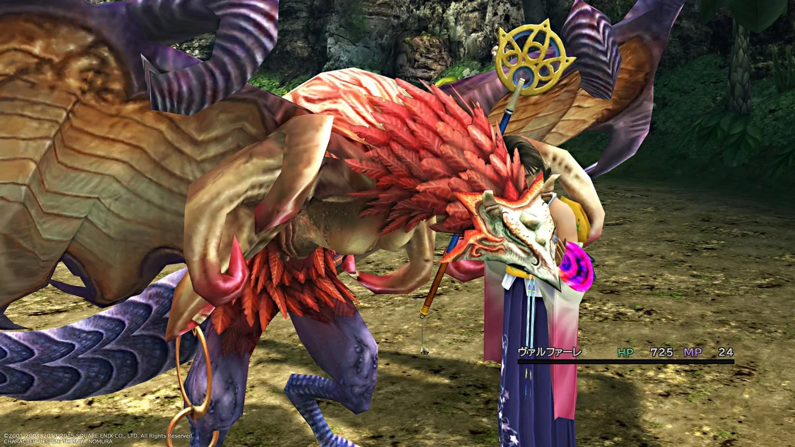
这一代理机制也使终局的反转不只是剧情上的“告别”。玩家过去通过菜单呼叫召唤兽，让其代替队伍承受伤害；现在却被要求呼叫它们进入耶朋·咒的占据，再由队伍亲手消灭。相同的召唤界面从资源调度器变成强制送行名册，按钮动作没有改变，伦理方向却完全倒转。最有力之处正在这里：意义不是来自一段解释规则的台词，而来自同一种熟练手势在不可拒绝的终局流程中被迫承担相反后果。
终战持续为队伍施加 Auto-Life，战斗因而几乎不再以失败的可能为核心；全员石化等特殊状况仍会造成失败，所以更准确地说，这是一场把通常胜负压力降到最低的脚本化仪式。规则改变了问题：重点不再是“你是否足够强”，而是“游戏如何迫使你亲手完成这场失去”。传统角色扮演游戏常把装备、能力和伙伴的保全当作胜利奖赏，《最终幻想X》却把完成度改写为告别的重量：收集得越完整，终局必须亲手终止的关系就越多。系统不只陈述观点。它把观点变成一套必须逐项执行的操作。16
不是“规则也有主题”，而是规则分配身体姿态。
寺院要求按合法接口前进；CTB 允许重排尚未来临的时间；幻光盘让越界付出资源成本；召唤把被囚禁者转化为代理战力；终局则迫使同一双手把代理权改写为送行。
借用弗洛伊德及后来创伤研究的词汇，这一过程从“行动化”转向不完全的“修通”：玩家不再借更强的召唤重复旧答案，而是在终局仪式中识别并切断重复装置。补充说，这一切要经由手指完成；指出，被舍弃的正是此前故事赋予情感重量的伙伴；则说明，神圣资源退出叙事系统，才使死者不再被主权捕获。20
优娜的异界送因此不是遗忘技术。她正式执行异界送的是奥隆；召唤兽随着祈祷者获释而消散，提达则因梦城召唤停止而失去形体。三者机制不同，却共同把离去交到仍然活着的人面前。优娜随后在公共演说中要求人们记得失去者。离去与记忆并不矛盾：只有当死者不再以职位、神谕、武器或持续召唤的城市占据现在，记忆才不必通过复演证明忠诚。游戏给出的不是“克服悲伤”，而是更艰难的命题——带着不能补偿的悲伤生活，同时拒绝把悲伤转嫁给下一名牺牲者。
但革命若只剩下放弃，仍可能把世界留给虚无。阿伦特以“诞生性”说明，行动之所以具有政治意义，不只因它终结某物，也因每一个来到共同世界的人都有开始未被既有因果完全规定之事的能力。新开端没有胜利公式，它必须在复数的人之间，通过言说、承诺、争论与共同承担而出现。优娜拒绝优娜蕾丝卡时并不知道一定会赢；正因没有旧神谕担保，她的决定才从服从转为行动。
终局后的公共演说于是有了不同于神谕的性质。优娜不再以召唤士的特殊牺牲替所有人封闭未来，而以幸存者和见证人的身份，把“我们失去了什么”交给共同体回答。安宁不再由一个圣女的身体担保，也不等于从此没有冲突；它只是把世界从死者预先写好的剧本中释放出来，使不同群体能够在没有究极召唤这一唯一答案的条件下，共同决定如何生活。革命既是一场送行，也是一场诞生。
第四幕 转译：同一场告别，几种伦理
旧循环在剧情中被切断，却还会在语言中继续获得不同结局。第四幕把视线从世界内部转向版本之间：配音长度、嘴形、市场语音轨和目标语言的语用习惯，都会重新安排爱、感谢、记忆与遗忘的分量。不是思想分析后的附录，而是玩家实际遭遇作品的最后一套接口。
十二、不是镜子，而是第二套程序
《最终幻想X》是系列首次全面进入角色配音时代的正传作品。画面先按日语表演完成，英语团队必须在嘴形、镜头长度与配音节奏中重写句子；后来的欧洲语言又常以英语配音为实际约束。2016 年 PC 版的官方语言设置清楚展示了两条链：日语、韩语与繁体中文文本配日语语音；英语、法语、意大利语、德语与西班牙语文本配英语语音。多语版本不是八面互相独立的镜子，而是两组由声音技术组织的翻译谱系。17
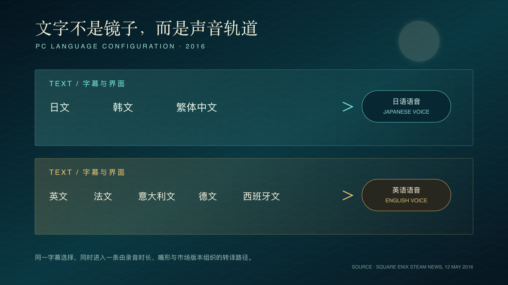
这使本身也具有程序性。字幕不只追随意义，还要追随嘴形；译者不只面对原文，还要面对已经录制的另一种表演；玩家选择语言，也同时选择一条声音—文字的耦合路径。翻译研究把这种现象称为中继翻译或间接翻译。在游戏中，它更像第二套规则：时间框、界面长度、语音轨和市场版本，共同决定什么能够被说出。
最著名的例子发生在提达消失前。日文优娜说「ありがとう」；英语版改为 “I love you”。前者以感谢包容爱情、共同旅程与无法偿还的赠予，关系的重量留在语境中；后者把含蓄的关系行为转化为明确的爱情宣言。英语负责人亚历山大·O·史密斯后来说明，这一改动经过脚本作者认可；西班牙语译者卡梅·曼吉龙则回忆，她个人更倾向“永别了”一类表达，却必须服从英语配音中的爱情告白。18
这里不能落入“东方含蓄、西方直接”的民族性俗套。差异至少来自四层：日语日常语的语用含量、优娜一贯的说话方式、场景中的拥抱与消失、以及英语嘴形和配音长度。译文改变了伦理重心，却不等于误译。日文把爱表现为对共同经历的致谢，英文把潜台词公开为爱情命题；西班牙语又在英语声音的轨道上继续运行。翻译不是背叛原作，而是让原作中不同的可能意义取得不同音量。
十三、“偶尔想起”与“永不忘记”
结尾公共演说的差异更能触及本文中心。日文的关键请求是：「いなくなってしまった人たちのこと、時々でいいから……思い出してください」；本文转译为：“那些已经不在的人，偶尔也好……请想起他们。”英文把它收束为更强的命令：“Never forget them。”由于本文尚缺同一场景的官方繁中字幕图证，以下比较只把中文作为日文的工作转译，不把网络流传译句列作官方台词。
日文的「時々でいいから」不是降低纪念的价值，而是给生者留下不纪念的时间。它承认日常生活会继续，人不可能时时住在纪念碑中；记忆可以间歇地回来，不必以持续痛苦证明忠诚。英文的绝对命令则更接近现代公共纪念文化：永不忘记，把个人扩张为共同体誓言。两者都反对抹除，却想象了不同的记忆节律。
这组差异恰好对应梦中的札纳尔坎德的伦理。梦城要求永远、连续、无间歇地维持召唤；日文结尾则允许梦停止，让记忆偶尔回来。若从弗洛伊德的理论看，间歇不是遗忘的失败，而是主体重新把注意力交还世界的条件。若从看，“永不忘记”具有必要的公共力量，却也必须持续追问：记住谁、由谁代表、哪些战争责任在纪念中被删去？强度更高的口号并不自动产生更完整的历史。
利科关于记忆、历史与遗忘的讨论，使这组差异不必被简化为“软弱”与“坚定”的对立。记忆总要经过选择、叙述与见证；遗忘既可能是权力删去不愿承担的过去，也可能是日常生活重新展开的条件。关键不在于把记忆强度推到最大，而在于使证言能够被检验：谁在说“我们”，谁没有被纳入“他们”，一个共同体怎样在纪念受难时仍承认自身的加害责任与叙事遗漏。
于是，德里达与利科在这里承担不同的工作。德里达提醒我们，永远不能把他者完全收回自我，死者会以痕迹继续打断现在；利科则把问题带回公共叙事，要求人在记忆义务、史料批判与必要遗忘之间维持脆弱的平衡。「時々でいいから」并非准许历史失忆，而是拒绝把日常生活永久编入纪念值勤。偶尔想起，意味着记忆不是监视生者的守卫，而是会在某个时刻归来、重新唤起责任的客人。
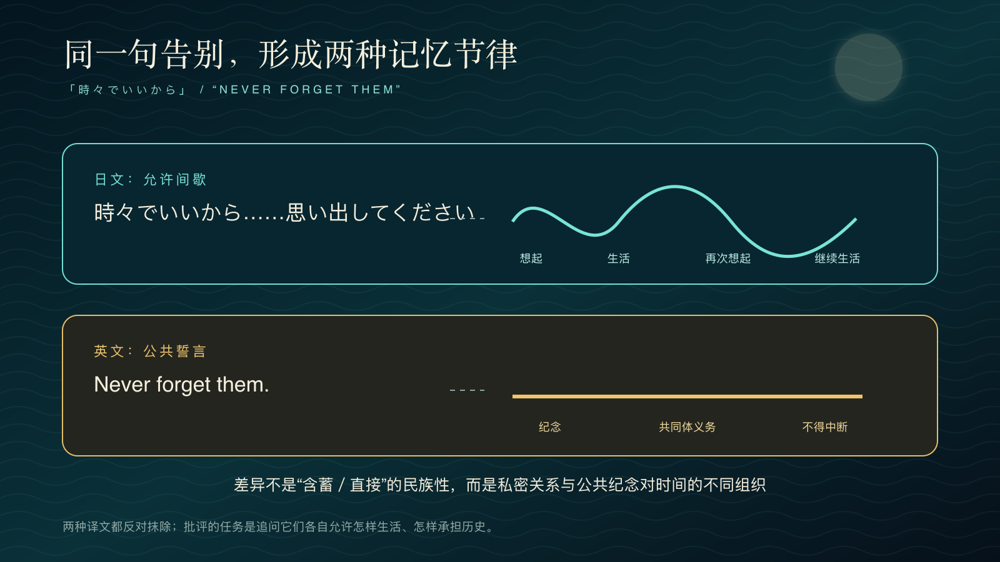
十四、词典：词语怎样重新安排神学
辛／シン／Sin
官方中文保留音译专名“辛”，同时偶然唤起苦难之“辛”；日文片假名让名称先保持为陌生的声音；英语 “Sin” 则立刻把怪物置入罪、过犯与道德责任的语域。民间意译“罪”虽然能显出耶朋教义，却不应冒充官方中文译名；若要进一步断言它指向基督教“原罪”，仍需更多文本证据。玩家尚未理解世界，名称已经在不同语言里调节了神学的音量。
祈祷者／祈り子／fayth
本文采用“祈祷者”，使其首先显为祈祷的执行者；日文把「祈り」与指人的「子」相连，仍让人听见被固定的身体；英语创造带有古风的 “fayth”，则把身体推向教义化的“信”。三者分别强调祈祷的行动者、被召唤的人与神学信念，也因此改变玩家对其囚禁状态的第一印象；官方繁中身份仍应以游戏内图证固定。
异界送／異界送り／Sending
日文同时交代目的地与送行动作；英文把它抽象成大写仪式名，听来近似宗教圣礼；中文若保留“异界”，则维持空间边界。译法决定玩家首先想到的是“送谁去哪里”，还是“一项被教会命名的仪式”。
安宁节／ナギ節／Calm
「凪」首先是风停浪静的海况，「節」是时节；英文抽象成宁静状态；中文“安宁节”容易让人联想到节庆或纪念日。原本不稳定的气象间歇，因翻译逐渐获得制度日历的形状。
究极召唤／究極召喚／Final Summoning
日文与本文采用的中文形式强调力量抵达极限，英文 “Final” 更突出终局与死亡。前者诱惑人追求最高完成，后者预告这是一场没有归途的仪式；中文形式的官方身份仍待同场景字幕图证。
祈祷之歌／祈りの歌／Hymn of the Fayth
本文中文形式与日文都是宽泛的“祈祷之歌”，并不在标题里指定谁唱、向谁祈祷；英文以 “hymn” 引入教会圣诗语域，又用 “of the Fayth” 把歌曲的所有权与祈祷者绑定。歌曲原属札纳尔坎德的反抗传统，后来却被耶朋收编；英文标题的宗派化尤其容易让玩家把后来的圣典身份误认成起源。中文形式的官方身份仍待同场景字幕图证。
更独特的是，歌唱音节在各语种版本中通常不随字幕被完整语义化。日、英、西语或中文玩家先共享一段难以直接解析的声音，后来才可能借剧情、资料或音节重排发现歌词的命令结构。在这里选择保留不透明性：声音建立跨语言的共同熟悉感，文字则在较晚时刻重新分配谁是祈祷者、谁被要求继续做梦。标题可以被翻译，嗓音却以其身体性抵抗被任何一种目标语言完全占有。
本文的细读材料以日语、英语和可核实的官方繁中专名为主，西班牙语用于说明英语语音轨怎样继续约束下一层翻译；法语、德语与意大利语只作为官方声音配置的旁证，不被伪装成已完成的平行语料库。这个有限范围已经足以显示：英文把“辛”直接置于罪与道德责任的语域，又把告别说成爱情和永恒记忆；日文让专名保持含混，让保留间歇；官方中文专名则在音译、汉字古典感和日英两条来源之间摆动。分析的任务不是裁定哪种语言最忠实，而是追踪每种版本怎样重新分配陌生性、宗教性、情感强度与历史时间。世界观并非先完整存在，再被翻译搬运；史匹拉在每种语言中都重新建造一次。
尾声：记住，但不要住进记忆
《最终幻想X》从海岛开始，在废墟结束；从一次为陌生死者举行的送魂，走向一场必须把自己所爱之物送走的革命。它展示了一种由真实灾难、真实安慰和真实善意共同维持的坏制度。耶朋没有创造全部痛苦，却垄断痛苦如何被解释，又把新牺牲者规定为唯一合法答案。
游戏先让这种秩序进入身体。一本道把推进写成义务，寺院把服从拆成接口，有限视角把死亡藏进共同体的缄默，召唤和成长则把祈祷者的拘禁转换为可用能力。CTB 与幻光盘又在微观层面训练另一种可能：次序可以干预，路径可以越界，结构能够重新布线。终局因此不是忽然从剧情外降下的革命，而是把数十小时积累的操作经验转向它此前服务的制度。
东亚历史与思想在这里提供三道检验：南方岛屿的美是否遮蔽中心与边缘的不对称？灾难记忆是否把受害变成免责身份？、和供养是否在安慰失去的同时，替制度美化他人的死亡？、原爆文学和丧葬史因而成为批判尺度，而非“日本文化密码”。
作品中的水、歌声、石壁、灯带、废墟和界面，不只是装饰，它们也在论证。水携带幻光与倒影，《祈祷之歌》携带被篡改、却未被耗尽的历史；寺院把正统做成机关，梦城把过去做成可以运行的现在，CTB 与召唤菜单则让命运显出可以触碰的接缝。美让玩家爱上牺牲的庄严，也让制度的裂口最终能够被看见、被听见，并被反转。
营火旁的倒叙在抵达札纳尔坎德时追上自己，提达的讲述也从回忆进入没有旁白保证的现在。他最初说：“听我的故事。”仿佛只要讲下去，存在就会得到证明。到了最后，故事完成了，讲述者也要消失。叙事没有把他保存成永远在场的主人公，而是把他的声音交给仍要继续生活的人。记忆由此不再只是保存自己，而成为一项关系的托付：我不能留下。但在未来某个时刻，你仍可以回应我。
优娜最后没有要求生者永远住在纪念碑里。她让人们继续生活，只在某些时刻回头。记忆值得保存，不是因为它能够撤销失去，而是因为它会改变此后的行动。不同于循环，也不是因为悲伤终于消失，而是因为这份悲伤不再被转嫁给下一名牺牲者。
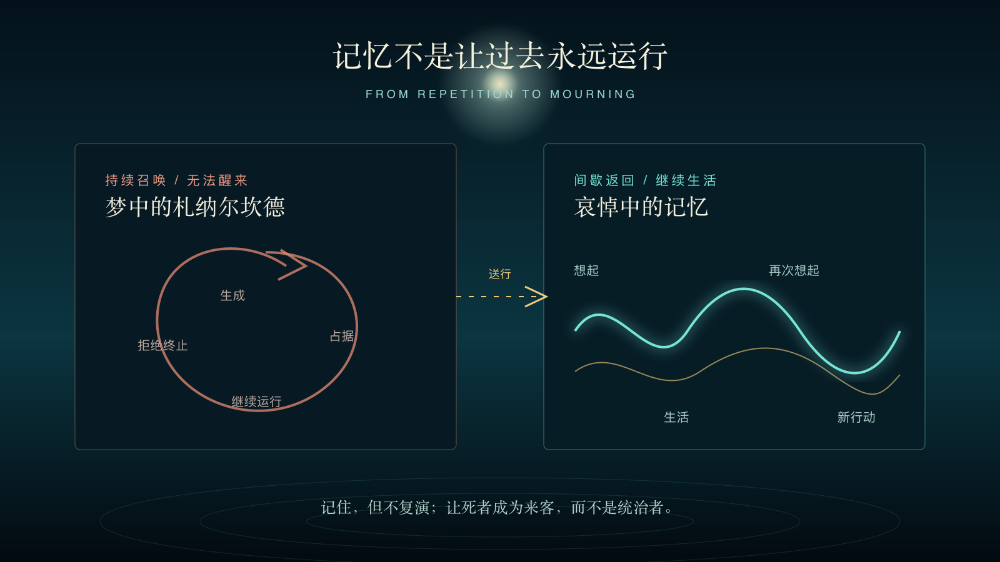
记住，但不复演；，但不献祭；承认梦曾经真实，却不要求所有人永远替它做梦。
注释
- 本文的剧情与基础规则以 Square 于 2001 年发行的 PlayStation 2 日文／英文版《Final Fantasy X》为核心文本；语言配置、专家幻光盘、黑暗召唤兽及审判者等内容另指 International、HD Remaster 或 2016 年 PC 版。截图可能来自 HD Remaster，文中不把材质升级误写成原版画面特征。
- 基利卡异界送位于队伍抵达基利卡港后的主线事件。原版主线演出不可由玩家改写；“只能观看”描述的是该段落撤回移动与战斗输入的脚本结构，而非声称所有后续平台都具有完全相同的跳过功能。
- 米卡的未发送状态在贝薇尔揭示；优娜蕾丝卡于札纳尔坎德穹顶继续传授究极召唤；希摩尔则在贝薇尔、嘎嘎泽特山和“辛”内部多次把死亡宣称为终结痛苦的方案。三者分别代表行政延续、传统复制与死亡总体化。
- 营火框架见开场及“Zanarkand—Outskirts of Ruins: Campsite”。倒叙追上营火后，提达的回顾性旁白停止。场景定位可参 Auronlu, “Chapter XIII: Zanarkand,” Final Fantasy X Game Script；引文仍以游戏演出为准。
- 寺院试炼的插槽、幻光球、基座与破坏幻光球规则，可由比塞德、基利卡等试炼回廊直接复核；隐藏宝箱又与取得阿尼玛所需的破坏幻光球宝物相连，使早期“完成度”在后期取得制度性后果。
- 强笑的限制与亚历山大·O·史密斯的回忆，见 Jason Schreier, “How Final Fantasy X’s Infamous Laughing Scene Happened,” Kotaku, 2016。该证言明确指出，场景在日英表演中都被设计为刻意而不自然。
- 冲绳旅行、角色命名与“东方”方向的开发叙述，见二十周年开发者访谈译文 “Tidus Was a Plumber? Final Fantasy X 20th Anniversary Developer Interview,” Frontline Japan, 2021；本文只据此确认创作材料，不把比塞德等同现实冲绳。
- 《祈祷之歌》的正式音节文本与版本家族，可参 FINAL FANTASY X Original Soundtrack 及 FINAL FANTASY X HD Remaster Original Soundtrack。音节矩阵重新排列后形成的日语祈使句省略助词，故本文保留耶朋·咒作为呼告对象或祈祷对象的语法歧义。
- 梅辰关于歌谣史的可选讲述出现在嘎嘎泽特山一带：歌曲先作为札纳尔坎德反抗贝薇尔的歌，后被耶朋禁止，又在禁令失败后被重新解释为安抚死者的圣典。此段是游戏内学者的叙述，不等于全知旁白；文章分析的是教团改写传统的机制。
- 人物转变的主要场景包括阿尔贝德家园毁灭、贝薇尔审判、平静之地及优娜蕾丝卡战前选择。阿尔贝德绑架召唤士的目的在家园由希德说明；瓦卡的改变也不是一次台词完成，而是贯穿其与莉库的争执、歉疚和并肩战斗。
- CTB 换人、行动顺序与成长收益依游戏规则实测表述：换入角色本身不消耗其当前行动，但获得 AP 通常要求角色实际参与战斗。International／HD Remaster 的专家版幻光盘会改变初始路径开放度，故本文只论两种幻光盘共享的节点、资源与越界结构。
- 原爆与《最终幻想》系列的核话语关联，参 Rachael Hutchinson, “Nuclear Discourse in Final Fantasy,” 2019；广岛记忆的国家框架、旅游与跨国政治问题，参 Lisa Yoneyama, Hiroshima Traces, 1999。本文不主张“辛”是原子弹的密码。
- 的形成、成员边界与战争责任，参 Bret W. Davis, “The Kyoto School,” Stanford Encyclopedia of Philosophy。西谷参与“近代的超克”，又与高坂正显、高山岩男、铃木成高等人卷入《中央公论》的“世界史立场”讨论；西田与田边的战时位置不能与这些讨论简单合并。关于户坂润作为西田门下、马克思主义批判者及所谓“左翼”的争议，参 Kawashima, Schäfer, and Stolz, eds., Tosaka Jun: A Critical Reader, 2013。西田、西谷、田边、户坂与德里达在文中承担不同问题，不被合并为同一个“空无”概念。
- 终局在杰克特战后要求优娜召唤自己仍持有的召唤兽；耶朋·咒依次占据它们，玩家再逐一击败。召唤兽的数量随玩家是否取得保镖、阿尼玛和美嘉斯三姐妹而变化，因此“送行名册”确实受此前可选完成度影响。
- 七曜武器、怪物训练场、水斗球、雷击回避、陆行鸟训练和隐藏召唤兽属于原版即可游玩的系统；黑暗召唤兽与审判者来自 International 及其后继版本。本文列举这些内容是为了检验“放下”命题，不把支线清单冒充全部玩家经验。
- 终战的持续 Auto-Life 与召唤兽占据顺序，可由游戏实机复核；交叉参照 Gamer Guides, “The Final Battle—Sin,” Final Fantasy X HD Remaster Guide。该战斗通常无法因普通击倒而失败，但全员石化等人为特殊状况仍可能触发 Game Over。
- 2016 年 PC 版启动器的语言组合由 Square Enix 公告确认：日／韩／繁中字幕配日语语音，英／法／意／德／西字幕配英语语音；因技术原因不提供自由双语音轨。见 “FFX|X-2 HD Remaster Language Settings,” Steam News, 12 May 2016。
- 「ありがとう」与 “I love you” 的差异可由日英结局直接核对；英语改写的制作背景见亚历山大·O·史密斯访谈，西班牙语生产限制见 2017 年 Carme Mangiron 访谈。本文没有取得法、德、意三语逐句对照材料，故只把它们列入声音配置，不作等量细读。
- 官方繁中商品页能够直接核实“提达”“优娜”“辛”“史匹拉”“召唤士”“幻光球”“安宁节”等核心形式；“札纳尔坎德”“祈祷者”“幻光盘”“耶朋·咒”“异界送”与“祈祷之歌”等游戏内用语仍应以相应平台、地区和版本的字幕或界面截图建立图证。本文把已核实的繁体形式转换为简体字形；无法直接核实的完整语句标为本文转译，不把民间旧译混入官方译名系统。
- “记忆—重复—修通”的术语直接参 Freud, “Remembering, Repeating and Working-Through,” 1914；“”另参 Beyond the Pleasure Principle, 1920。“修通”对应德语 Durcharbeiten／英语 working-through，亦有“工作通过”等译法。正文把这一临床词汇转用于集体制度与游戏过程时，同时接受 LaCapra 对 acting out／working-through 的历史创伤论修正。“幻想组织现实感”参 Lacan, The Seminar of Jacques Lacan, Book VI: Desire and Its Interpretation；本文不据此诊断人物。
- 冲绳的战后军事基地、旅游凝视与中心—边缘关系，参 Gerald Figal, Beachheads: War, Peace, and Tourism in Postwar Okinawa, 2012；Gavan McCormack and Satoko Oka Norimatsu, Resistant Islands: Okinawa Confronts Japan and the United States, 2012。正文只以这些历史作为检验尺度，不把比塞德逐项寓言化为冲绳。
- 关于花、死亡与自我牺牲等审美符号如何被近代日本民族主义和战争国家动员，参 Emiko Ohnuki-Tierney, Kamikaze, Cherry Blossoms, and Nationalisms, 2002。本文不把所有“”文学归入国家主义，而只指出审美语言可以在特定制度中被重新编码。
方法说明与写作边界
- 本文以游戏本体、公开剧情文本、开发者访谈与资料为主要材料。施米特、弗洛伊德、拉康、本雅明、丸山真男、德里达、利科、阿伦特、与户坂润等概念均作为分析工具，不主张创作者曾直接受其影响。
- “辛—原爆”“札纳尔坎德—广岛”“比塞德—冲绳”均按结构共振处理，不建立一一寓言关系。任何东亚历史比较都须保留战争加害、殖民统治、基地政治与在地经验的具体差异。
- 异界送（異界送り／Sending）是虚构的混合仪式，不等于日本佛教、神道或琉球宗教的真实礼仪；文中只比较死者安置、追善与社会制度之间的结构问题。
- 细读以日英文本和能够直接核实的官方繁中专名为主，正文把繁体字形转为简体字形；未取得同场景官方繁中字幕图证时，只提供标明身份的本文转译。西班牙语材料用于讨论中继生产，法、德、意语只作为官方声音配置旁证。民间旧译仅在确有比较价值时标为非官方译法，不再与主译名并列使用。
- 游戏截图用于批评与研究说明，版权归 SQUARE ENIX 所有；图像来源在各图注中标明。来自第三方攻略站的画面只作为审稿样图，正式商业刊发仍须由编辑部依所在地法律、Square Enix 指南与版面用途确认复制许可；能自采或使用官方媒体素材时应优先替换。
- 与西方思想的关系按近代思想史处理，不以“东方空无／西方存在”构造封闭对立；文中也不把“空”直接等同于德里达的“”。
- 静态截图只能截取过程的一瞬。本文的图像分析同时说明截图前后的输入、界面变化与叙事回返，避免把程序机制误写成单帧图像本身已经完整表达的意义。
- 《祈祷之歌》的版本家族与作曲／编曲信息以官方原声带和 HD Remaster 原声带目录为依据；歌曲被禁与被收编的历史以梅辰在游戏中的讲述为依据。歌词音节重排后的日语省略助词，文中保留耶朋·咒作为呼告对象或祈祷对象的语法歧义，不把单一译法伪装成已获确认的唯一解释。
- 文中所说的礼仪吟诵、声音档案与反礼仪均是形式分析，不把《祈祷之歌》认定为任何现实宗教音乐的直接复制；相关分析图只概括本文论证，不替代游戏场景和原声材料。
- “规则”“界面”“脚本事件”在文中分开使用：CTB、幻光盘与成长收益属于稳定规则；菜单、行动栏和召唤列表属于界面安排；异界送、强笑、营火追时与终战持续 Auto-Life 属于被脚本触发的事件或特殊状态。
- 网页的“意象星图”借用荣格心理学中星座化与意象联结的启发，把水、月、废墟、寺院、幻光虫和歌声跨章节连接；它是一种阅读界面，而非证明这些意象属于超历史、跨文化不变的集体原型。正文不以荣格概念替代东亚宗教史、媒介形式与具体场景分析。
- 中文润色借鉴日文版台词在配音台本整理中主动省略主语、压缩说明、保留停顿与反复的倾向。开发者访谈也说明，优娜的敬体与提达的口癖是在演员声音和集体收录中逐渐形成的。本文只转化这种节奏，不仿写角色口癖，也不把评论者的判断伪装成游戏原台词。
- 网页的“穿越幻想”不是撤去审美表面后宣称抵达纯粹真相，而是显示图像、路线、术语与互动怎样为读者安排见证人、操作者、收集者和送行者的位置。“画面所许诺／操作所索取”也不是显义与唯一潜义的解码关系；两者之间不可消除的裂缝，才是本文所说的拉康式幻想阅读。
资料与延伸阅读
Arendt, Hannah. 1958. The Human Condition. University of Chicago Press. https://press.uchicago.edu/ucp/books/book/chicago/H/bo29137972.html
Auronlu. “Chapter XIII: Zanarkand.” Final Fantasy X Game Script. Accessed July 30, 2026.
Benjamin, Walter. 2003 [1940]. “On the Concept of History.” In Selected Writings, Volume 4: 1938–1940. Harvard University Press. https://plato.stanford.edu/entries/benjamin/
Bogost, Ian. 2007. Persuasive Games: The Expressive Power of Videogames. MIT Press. https://doi.org/10.7551/mitpress/5334.001.0001
Boym, Svetlana. 2001. The Future of Nostalgia. Basic Books.
Crick, Timothy. 2011. “The Game Body: Toward a Phenomenology of Contemporary Video Gaming.” Games and Culture 6 (3): 259–269. https://doi.org/10.1177/1555412010364980
Davis, Bret W. 2026. “The Kyoto School.” Stanford Encyclopedia of Philosophy. https://plato.stanford.edu/entries/kyoto-school/
Derrida, Jacques. 1994. Specters of Marx: The State of the Debt, the Work of Mourning and the New International. Routledge.
Derrida, Jacques. 1996. Archive Fever: A Freudian Impression. University of Chicago Press. https://press.uchicago.edu/ucp/books/book/chicago/A/bo27619045.html
Derrida, Jacques. 2001. The Work of Mourning. University of Chicago Press.
Freud, Sigmund. 1958 [1914]. “Remembering, Repeating and Working-Through.” In The Standard Edition of the Complete Psychological Works of Sigmund Freud, vol. 12.
Freud, Sigmund. 1957 [1917]. “Mourning and Melancholia.” In The Standard Edition of the Complete Psychological Works of Sigmund Freud, vol. 14.
Freud, Sigmund. 1955 [1920]. Beyond the Pleasure Principle. In The Standard Edition, vol. 18.
Famitsu.com. 2023. “『FF10』が発売された日。“水”を始めとした美しいビジュアル表現と別れを描いた切ないストーリーはいまでも忘れられない.” https://www.famitsu.com/news/202307/19309699.html
Famitsu.com. 2021. “『FF10』開発スタッフに訊く20年越しの想い『ゲームを知らない人にも伝わるものを作りたかった』.” https://www.famitsu.com/news/202108/02228928.html
Figal, Gerald. 2012. Beachheads: War, Peace, and Tourism in Postwar Okinawa. Rowman & Littlefield.
Gamer Guides. “The Final Battle—Sin.” Final Fantasy X HD Remaster Guide. Accessed July 30, 2026.
Hiroshima City Culture Foundation. “Atomic Bomb Literature.” Hiroshima Cultural Encyclopedia. https://www.hiroshima-bunka.jp/english/detail/010.html
Hutchinson, Rachael. 2019. “Nuclear Discourse in Final Fantasy.” In Japanese Culture Through Videogames, 129–152. Routledge. https://doi.org/10.4324/9780429025006-6
Jegged.com. “Final Fantasy X: Besaid Cloister of Trials; CTB Window; Zanarkand Walkthrough.” Accessed July 30, 2026. https://jegged.com/Games/Final-Fantasy-X/
Jung, C. G. 1969 [1959]. The Archetypes and the Collective Unconscious. 2nd ed. Collected Works, vol. 9, part 1. Princeton University Press.
Keogh, Brendan. 2018. A Play of Bodies: How We Perceive Videogames. MIT Press. https://mitpress.mit.edu/9780262055819/a-play-of-bodies/
Klevjer, Rune. 2022. What Is the Avatar? Fiction and Embodiment in Avatar-Based Singleplayer Computer Games. transcript publishing. https://cup.columbia.edu/book/what-is-the-avatar/9783837645798/
Lacan, Jacques. 2019. The Seminar of Jacques Lacan, Book VI: Desire and Its Interpretation. Edited by Jacques-Alain Miller. Translated by Bruce Fink. Polity.
LaCapra, Dominick. 2001. Writing History, Writing Trauma. Johns Hopkins University Press.
Kawashima, Ken C., Fabian Schäfer, and Robert Stolz, eds. 2013. Tosaka Jun: A Critical Reader. Cornell East Asia Series, Cornell University Press. https://www.jstor.org/stable/10.7591/j.ctv2xkjnh9
Mangiron, Carme, and Minako O’Hagan. 2006. “Game Localisation: Unleashing Imagination with ‘Restricted’ Translation.” The Journal of Specialised Translation 6: 10–21.
Maruyama, Masao. 1963. Thought and Behaviour in Modern Japanese Politics. Oxford University Press. https://ci.nii.ac.jp/ncid/BA03445302
McCormack, Gavan, and Satoko Oka Norimatsu. 2012. Resistant Islands: Okinawa Confronts Japan and the United States. Rowman & Littlefield.
Nishida, Kitarō. 1987. Last Writings: Nothingness and the Religious Worldview. University of Hawai‘i Press. https://uhpress.hawaii.edu/title/last-writings-nothingness-and-the-religious-worldview/
Nishitani, Keiji. 1982. Religion and Nothingness. University of California Press. https://www.ucpress.edu/books/religion-and-nothingness/paper
Ohnuki-Tierney, Emiko. 2002. Kamikaze, Cherry Blossoms, and Nationalisms: The Militarization of Aesthetics in Japanese History. University of Chicago Press.
Ricoeur, Paul. 2004. Memory, History, Forgetting. University of Chicago Press. https://press.uchicago.edu/ucp/books/book/chicago/M/bo3613761.html
Rowe, Mark Michael. 2011. Bonds of the Dead: Temples, Burial, and the Transformation of Contemporary Japanese Buddhism. University of Chicago Press. https://press.uchicago.edu/ucp/books/book/chicago/B/bo12046404.html
Ryan, Marie-Laure. 2006. Avatars of Story. University of Minnesota Press. https://www.upress.umn.edu/9780816646869/avatars-of-story/
Schmitt, Carl. 2005. Political Theology: Four Chapters on the Concept of Sovereignty. University of Chicago Press.
Schreier, Jason. 2016. “How Final Fantasy X’s Infamous Laughing Scene Happened.” Kotaku. https://kotaku.com/how-final-fantasy-xs-infamous-laughing-scene-happened-1784667830
Small, Christopher. 1998. Musicking: The Meanings of Performing and Listening. Wesleyan University Press. https://www.weslpress.org/9780819572240/musicking/
Square. 2001. Final Fantasy X. PlayStation 2 videogame.
Square Enix. 2016. “FFX|X-2 HD Remaster Language Settings.” Steam News. https://store.steampowered.com/news/posts/?appids=359870&enddate=1463068915
Square Enix. “FINAL FANTASY X.” Official Japanese title portal. Accessed July 30, 2026. https://jp.finalfantasy.com/titles/finalfantasy10
Microsoft Xbox. “FINAL FANTASY X/X-2 HD Remaster.” Traditional Chinese product page. Accessed July 30, 2026. https://www.xbox.com/zh-TW/games/store/final-fantasy-xx-2-hd-remaster/9NDNP3J6XWVH
Nintendo Hong Kong. “FINAL FANTASY X/X-2 HD Remaster.” Traditional Chinese product page. Accessed July 30, 2026. https://ec.nintendo.com/HK/zh/titles/70010000016261
Square Enix. “FINAL FANTASY X/X-2 HD Remaster.” Steam product page and Traditional Chinese interface metadata. Accessed July 30, 2026. https://store.steampowered.com/app/359870/FINAL_FANTASY_XX2_HD_Remaster/
Square Enix. 2021. “Guidelines for Using Copyrighted Works: Final Fantasy X|X-2 HD Remaster.” https://www.square-enix-games.com/en_GB/documents/ffx-x2hd-guidelines-copyrighted-works
Square Enix Music. “FINAL FANTASY X Original Soundtrack.” Accessed July 30, 2026. https://www.jp.square-enix.com/music/lineup/item/SQEX-10013-16.html
Square Enix Music. 2013. FINAL FANTASY X HD Remaster Original Soundtrack. SQEX-20015. https://www.jp.square-enix.com/music/sem/page/FFXHD/
Stone, Jacqueline I., and Mariko Namba Walter, eds. 2008. Death and the Afterlife in Japanese Buddhism. University of Hawai‘i Press. https://academic.oup.com/hawaii-scholarship-online/book/18330
Summers, Tim. 2016. Understanding Video Game Music. Cambridge University Press. https://www.cambridge.org/core/books/understanding-video-game-music/8076E2C2470CAAA2B4E898725651299E
UNESCO World Heritage Centre. “Hiroshima Peace Memorial (Genbaku Dome).” https://whc.unesco.org/en/list/775
Yoneyama, Lisa. 1999. Hiroshima Traces: Time, Space, and the Dialectics of Memory. University of California Press.
O’Hagan, Minako. 2005. “Multidimensional Translation: A Game Plan for Audiovisual Translation in the Age of GILT.” In Challenges of Multidimensional Translation: Conference Proceedings, 76–87. https://www.euroconferences.info/proceedings/2005_Proceedings/2005_proceedings.html
开发者访谈译文：“Tidus Was a Plumber? Final Fantasy X 20th Anniversary Developer Interview.” Frontline Japan, 2021. https://www.frontlinejp.net/2021/07/27/tidus-was-a-plumber-final-fantasy-x-20th-anniversary-developer-interview-part-1-3/
Carme Mangiron 访谈：“Entrevistamos a Carme Mangiron, traductora de los Final Fantasy VIII–XII.” La Capital Olvidada, 2017. https://www.lacapitalolvidada.com/blog/2017/09/20/entrevistamos-carme-mangiron-traductora-de-los-final-fantasy-viii-xii/